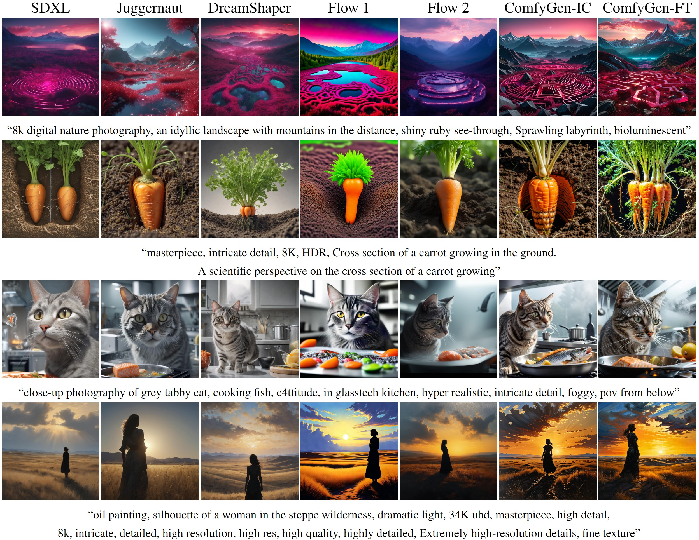
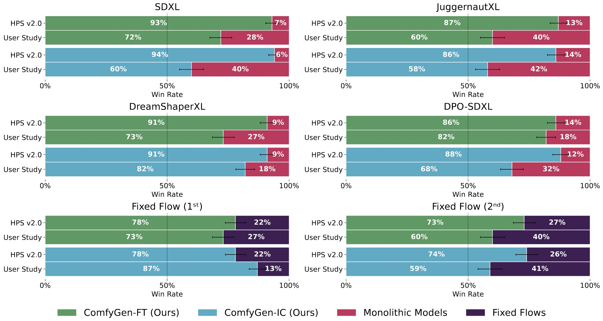
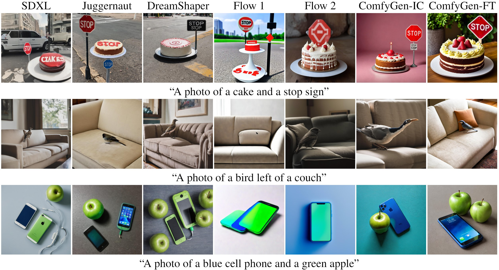
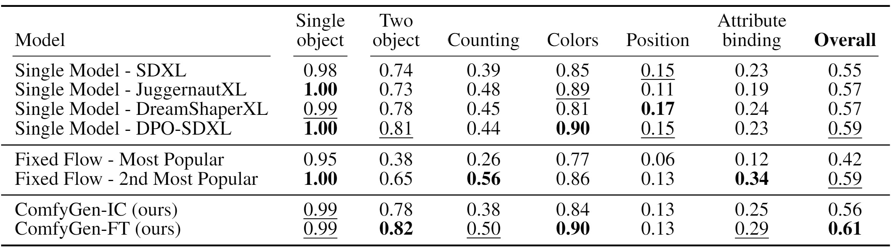

We compared our model to two classes of baselines: monolithic models (SDXL, the most popular fine-tuned versions, and a DPO-optimized baseline), and fixed prompt-independent flows. Our approach outperforms them all on both human preference metrics and on prompt-alignment benchmarks

Comparisons on user-created prompts from CivitAI

User study results on user-created prompts from CivitAI

Comparisons on prompts from the GenEval benchmark
